Alpha Playthrough
Level Overview
Overview
S.O.R.N is a fast-paced, third-person mech shooter built around large-scale combat and dynamic traversal. In Mission 1, the player is deployed into a vast desert to neutralize an enemy compound guarding a monolith-scale transportation facility known as The Wall — operated by a hostile PMC. After clearing the desert, the player infiltrates the facility sector by sector, plants a bomb in the control room, and extracts before time runs out. The desert serves as a proving ground for core mechanics, while The Wall escalates the challenge through tighter spaces, environmental hazards, and increasingly complex encounters.
Level Goals
- Teach core mech combat and traversal mechanics through escalating encounter design across the desert and facility
- Guide the player naturally from the open desert into the tight, high-stakes interior of The Wall without hand-holding
- Build tension and pacing across 5 distinct beats — from exploration and learning to infiltration and extraction
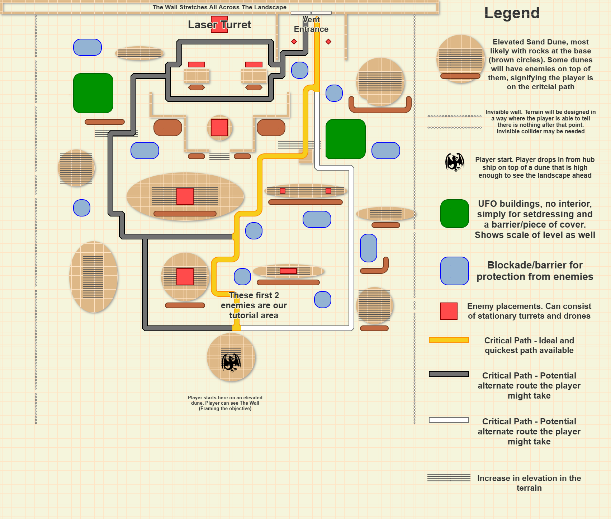
Top-down map of Mission 1 — The Desert
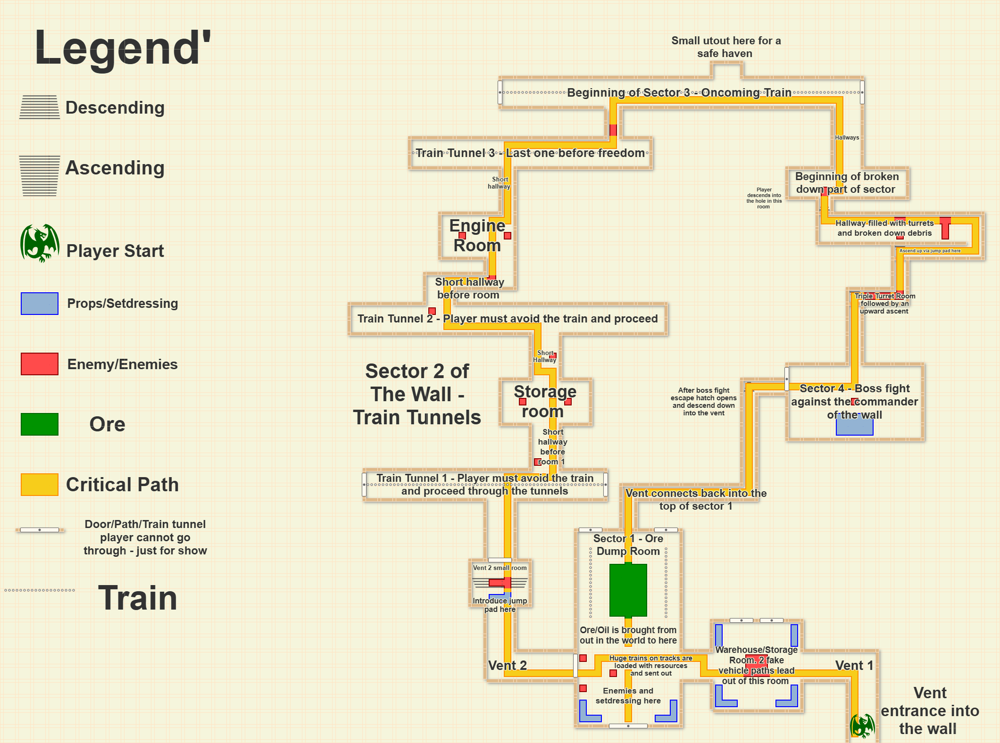
Top-down map of Mission 1 — The Wall facility
Beat Breakdown
Beat 01
The Desert
- Goal: Introduce players to core combat mechanics through a focused enemy compound encounter, using the environment to naturally direct movement and reinforce spatial awareness
- Design Action 1: Positioned the enemy compound directly at the base of The Wall, using flanking rock formations to funnel the player in and eliminate navigation ambiguity
- Design Action 2: Mounted a high-visibility laser turret above the compound entrance to serve as a threat landmark, drawing the player's eye to the objective and forcing a deliberate cover-based approach
Playthrough — The Desert
- The Space: An enemy compound at the base of The Wall guarding the facility entrance — the player must clear it and locate the maintenance entry point to infiltrate
- Flaw 1: The player had no line of sight on any objective — without a visible landmark or threat to react to, there was no logical decision point to drive movement or establish a sense of direction
- Flaw 2: The compound had no defined encounter structure — enemy positions, cover opportunities, and player routing were unestablished, leaving the space with no readable combat flow
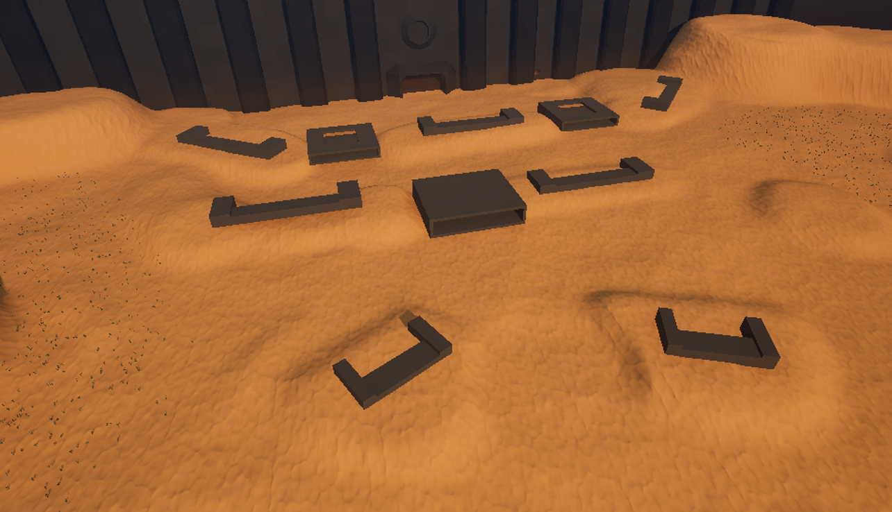
Blockout 1 — Undefined critical path
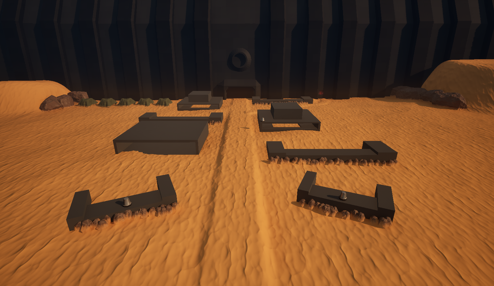
Blockout 2 — Road introduced but compound still lacks identity
- Solution 1: Introduced a central road leading from The Wall into the desert with geometry flanking both sides, establishing an unmistakable critical path while preserving cover opportunities
- Solution 2: Designed the road to fork naturally at the compound — with dialogue confirming the front entrance is locked and a waypoint directing the player, the fork becomes a meaningful decision point rather than a source of confusion
These changes worked with the game's existing systems rather than against them. The road geometry creates a clear decision point, dialogue provides narrative justification, and the waypoint handles explicit direction — the level design supports all three without redundancy
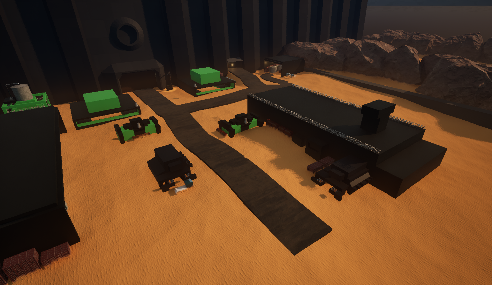
Forked road and locked front entrance directing players to seek another way in
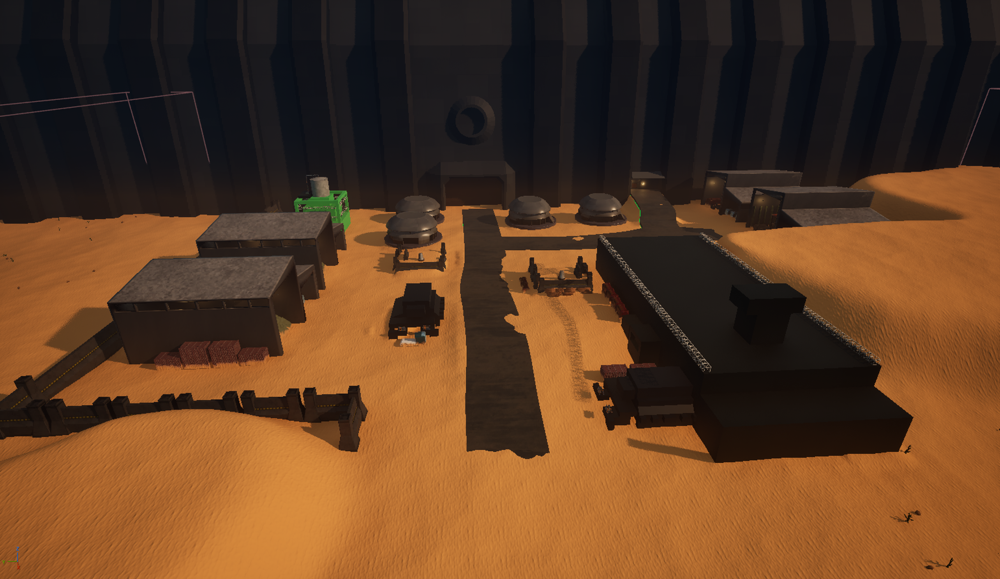
Perimeter geometry — controlled movement and spatial boundaries
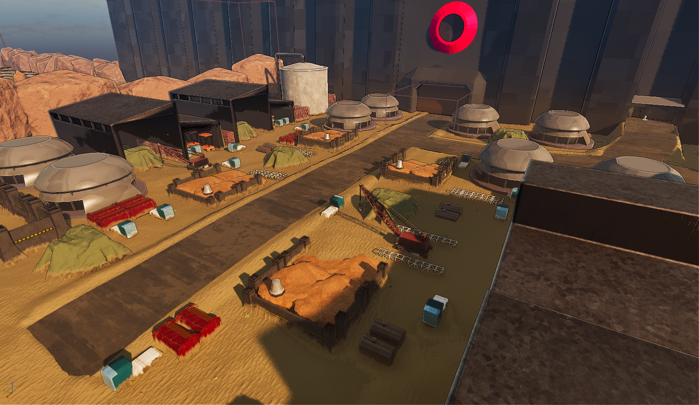
Critical path and cover layout
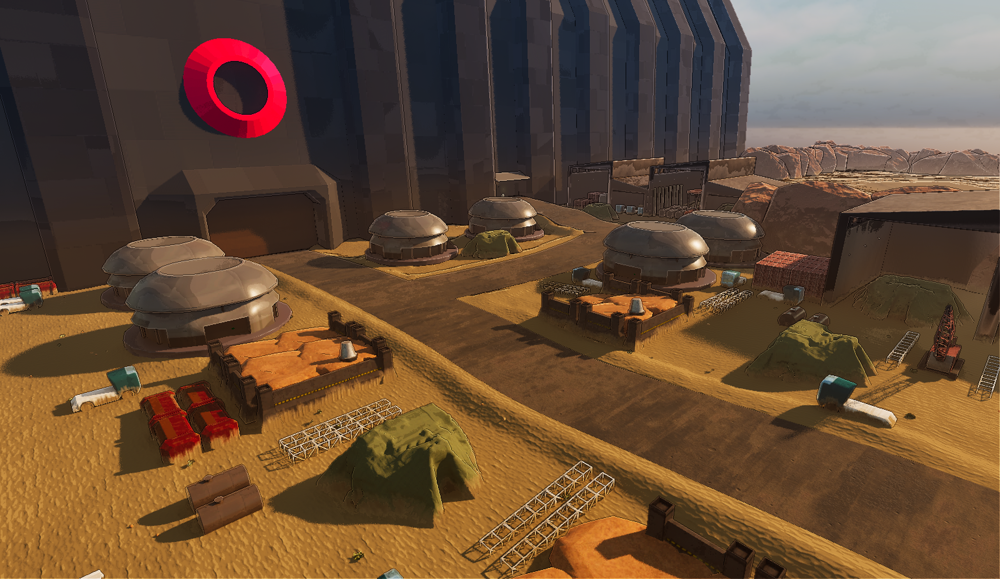
Maintenance entrance framed by the compound layout — the player's objective is visible and reachable through a defined combat space
Beat 02
The Wall — Sector 1
- Goal: Introduce players to interior combat for the first time, establishing the scale of The Wall facility and presenting new enemy types in a controlled, readable encounter space
- Design Action 1: Kept enemy density low and maneuvering space generous in the first interior encounter — the exit door opens only after enemies are defeated, giving the player a clear objective and a natural reason to engage rather than avoid
- Design Action 2: Designed Sector 1 as a functioning crystal loading bay — cargo containers and structural columns create natural cover positions while the space communicates The Wall's purpose as an industrial facility, grounding the encounter in the world's narrative
Playthrough — Sector 1
- The Space: The player's first interior encounter — a crystal loading bay inside The Wall where cargo is staged and loaded onto trains. The space is designed to introduce interior combat at a manageable difficulty while establishing the facility's industrial scale and purpose
- Flaw 1: Traversal paths and encounter flow were unclear — playtesters struggled to identify the forward route and frequently backtracked through the space
- Flaw 2: The exit was positioned on the opposite wall from the entry point with trains obstructing the sightline — players had no readable forward direction and couldn't identify where to progress after clearing the encounter
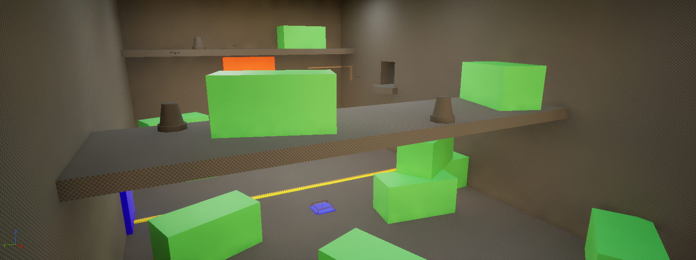
Blockout 1 — vertical concept scrapped after playtesting feedback
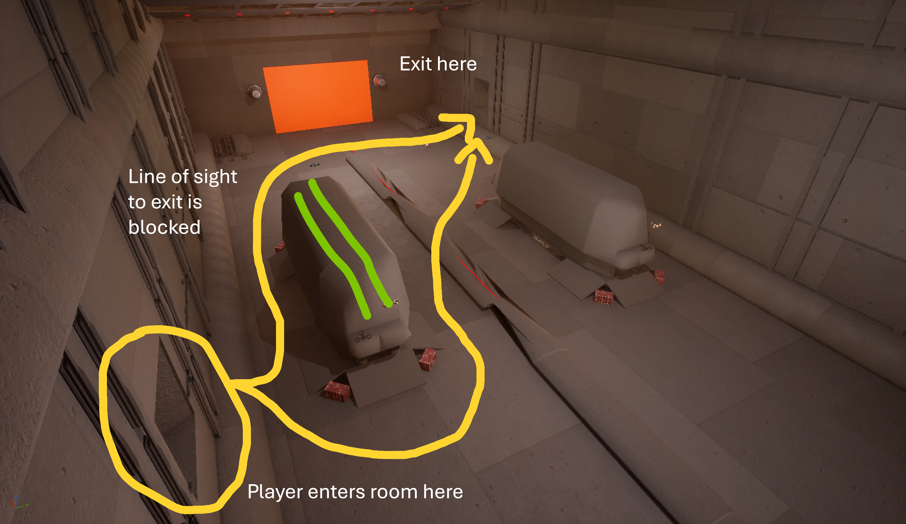
Blockout 2 — sightlines blocked by train geometry
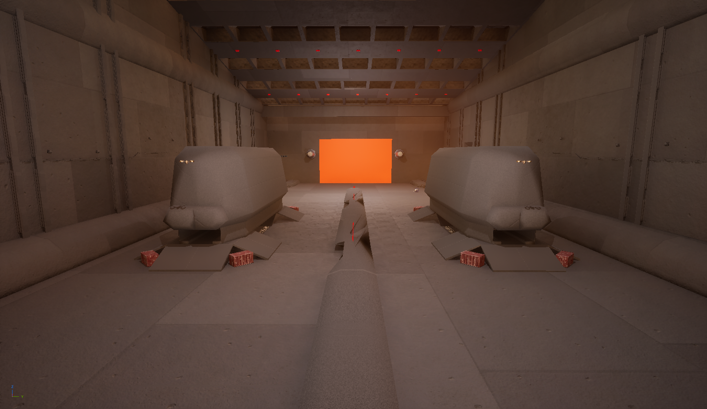
Blockout 3 — central trains and rooms entrance point obscured the exit and enemies
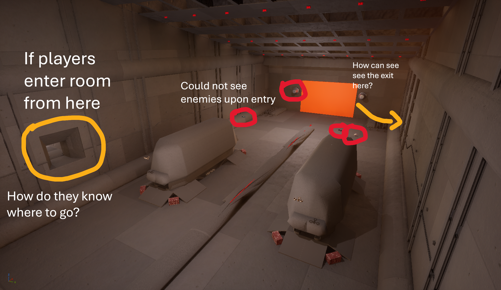
Blockout 4 — overhead view of blind sections
- Solution 1: Removed mandatory verticality and platforming from active combat zones — redesigned the sector for linear flow with a clear forward route that guides the player naturally through each encounter
- Solution 2: Relocated the room entrance to give players an immediate sightline into the encounter space — players now enter with enemies and the exit visible from the threshold, eliminating the blind entry problem
Removing verticality and relocating the entrance resolved both core issues in one pass. The space became immediately readable on entry — players could see enemies, cover, and the exit without the encounter fighting against the environment
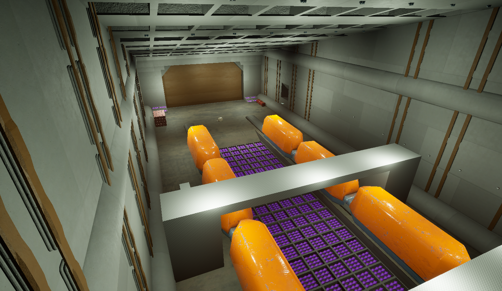
Platforming disrupting combat flow — removed in favor of linear, grounded traversal
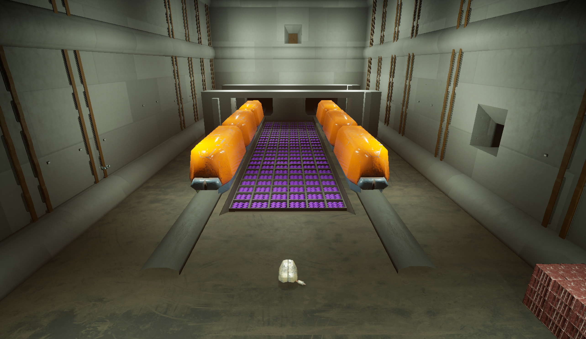
Relocated room entrance establishing a clear sightline to enemies and exit on entry
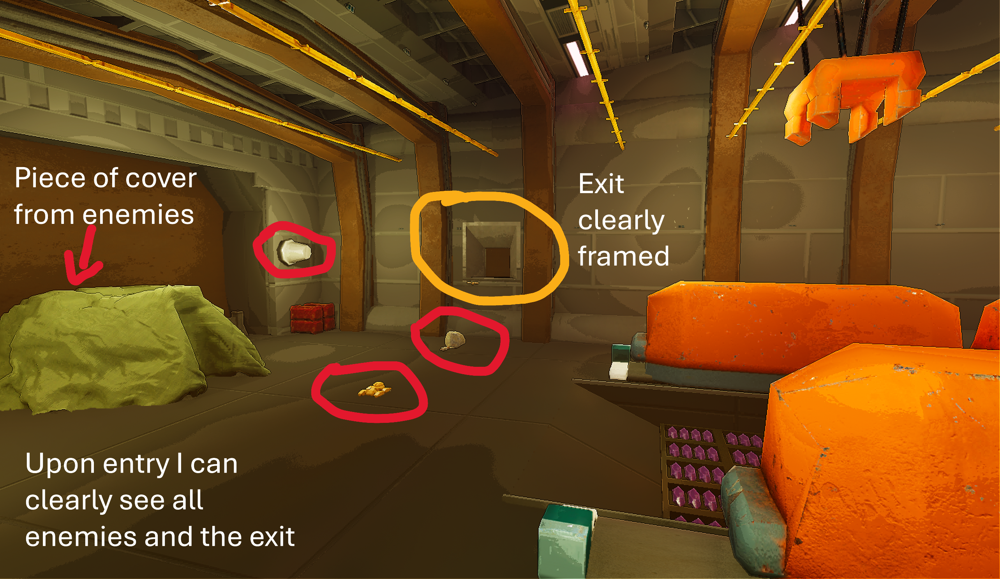
Player POV entering Sector 1
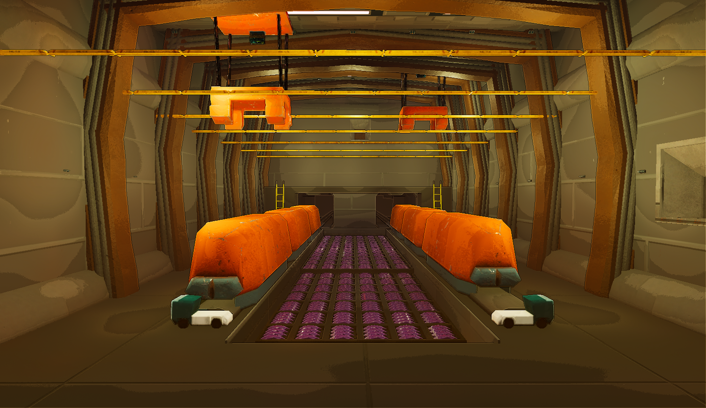
Player POV of crystal dump, showcasing the final design
Beat 03
The Wall — Sector 2
- Goal: Design a multi-zone sector built around an active subway network — alternating between combat rooms and train tunnels to create rhythm, disparity, and escalating tension across the space
- Design Action 1: Structured the sector as three combat rooms separated by three train tunnels — players must navigate moving trains between each encounter, creating a distinct pacing shift between combat and traversal
- Design Action 2: Used the train tunnels as active hazards rather than passive transitions — timing the player's movement through the tunnels adds mechanical pressure and reinforces spatial awareness before each new encounter
Playthrough — Sector 2
- The Space: An underground subway network inside The Wall — three combat rooms alternating with three active train tunnels, designed to create rhythmic disparity between intense encounters and high-pressure traversal
- Flaw 1: All rooms and tunnels read as identical spaces — without visual differentiation between zones the sector lost its sense of progression and players struggled to gauge where they were in the sequence
- Flaw 2: Lighting failed to compensate for the lack of spatial variation — with no geometry or visual landmarks to anchor the player, there was no readable way to communicate direction or progression through the sector
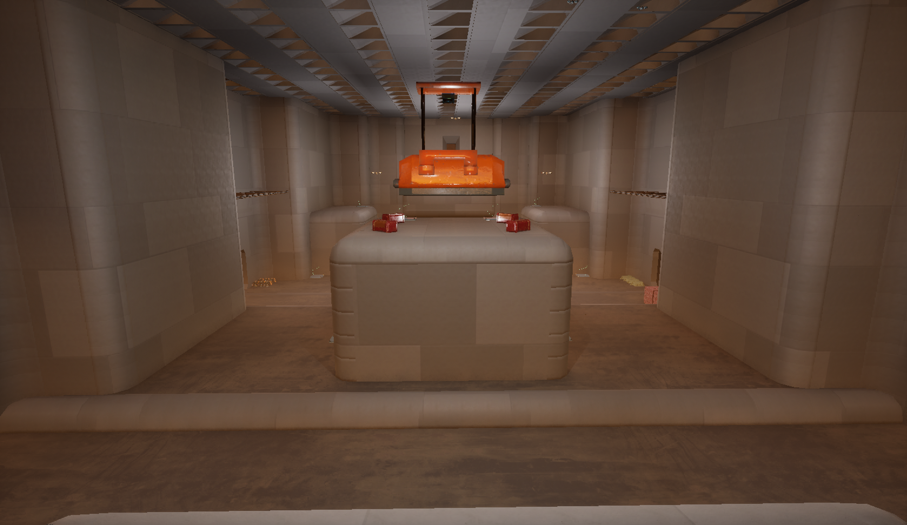
Blockout 1 — vertical concept scrapped to to bland design and oversized space
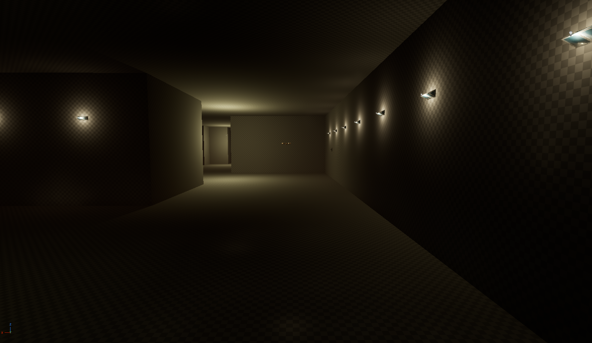
Blockout 2 — no spatial differentiation between zones
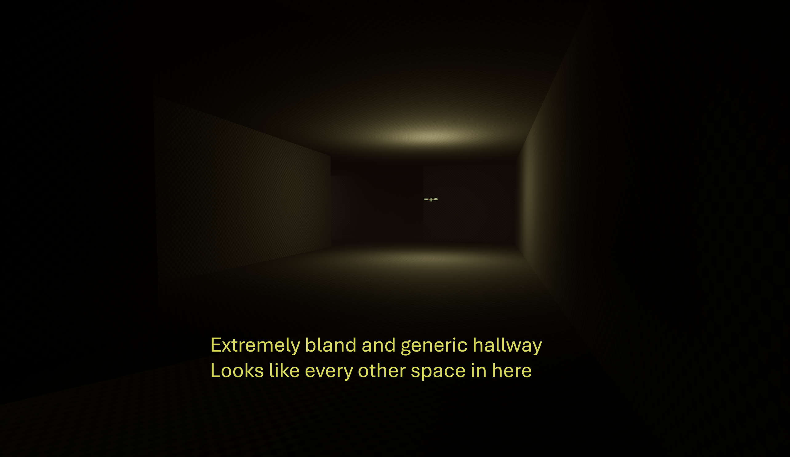
Blockout 3 — unlit, undifferentiated corridor
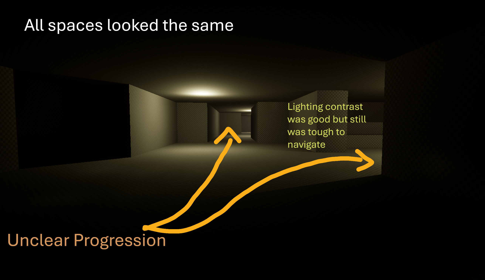
Blockout 4 — identical branching paths with no visual hierarchy
- Solution 1: Rebuilt the sector from scratch — new geometry gave each room, hallway, and train tunnel a distinct visual identity, eliminating the repetition that made the space feel directionless
- Solution 2: Relit the space with intentional contrast — rooms and hallways were well lit while train tunnels remained darker, creating a pull effect that naturally guided players toward the next zone without explicit direction
Starting over on the geometry solved both problems simultaneously. The spatial variation gave players a readable sense of progression, and the lighting contrast did the wayfinding work that the original blockout couldn't achieve
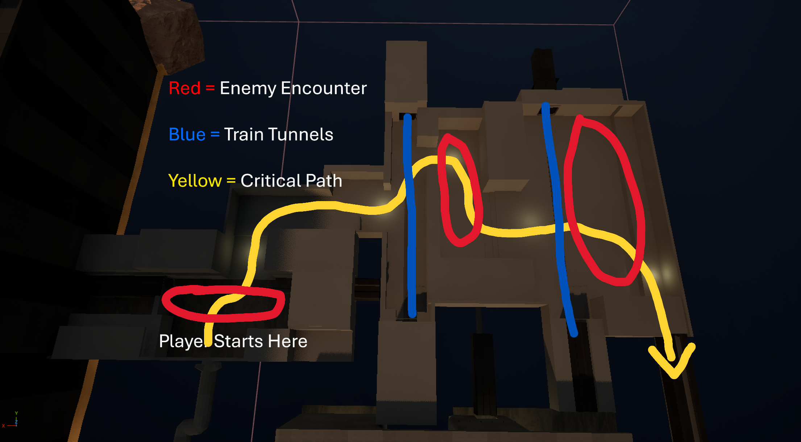
Overhead view of iteration for Sector 2
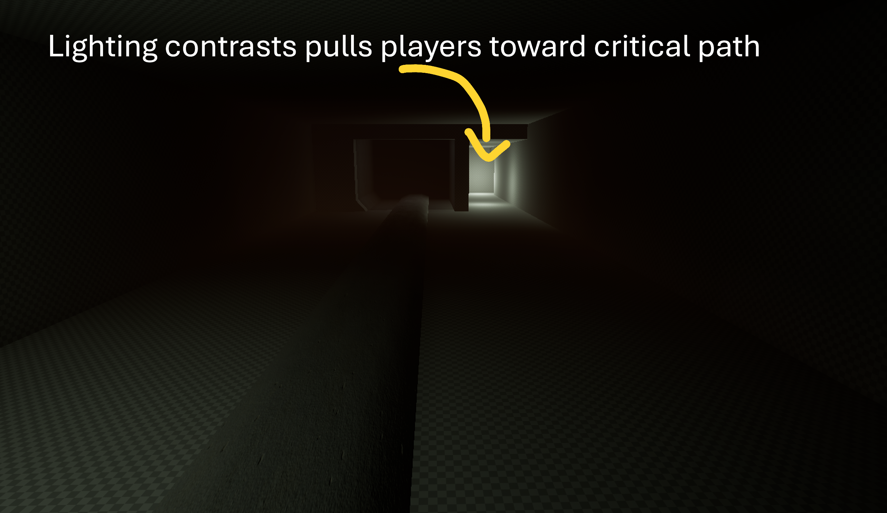
Lighting contrast — dark tunnel, lit path forward
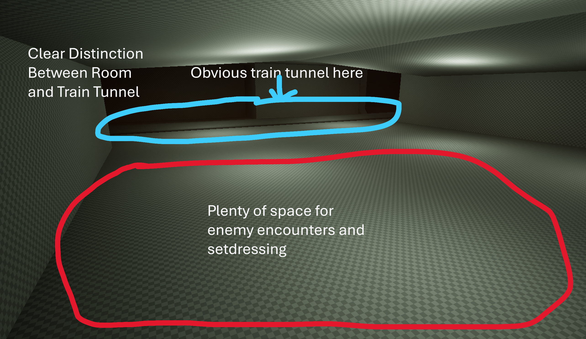
Distinct room vs. tunnel geometry
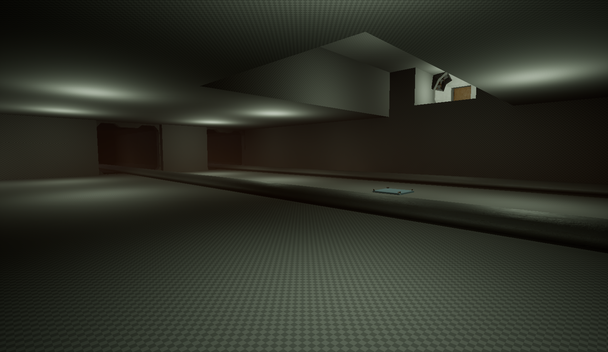
Well-lit combat room — clear forward direction
Beat 04
The Wall — Sector 3
- Goal: Shift pacing with a tighter, more linear section that demands mastery of all mechanics learned in previous beats
- Design Action 1: Used darker lighting, broken scaffolding, and environmental debris to build atmosphere and create a sense of danger while keeping traversal paths readable
- Design Action 2: Placed enemies densely in constricted corridors to demand precise movement and punish passive play, marking the escalation toward the final encounter
Playthrough — Sector 3
- The Space: A tight, linear corridor section deep inside The Wall — the player must fight through dense enemy placement and navigate a moving train hazard to reach the control room
- Flaw 1: After defeating the turret guarding the path forward, the drop-down route was not visible — players stalled at a dead end with no clear indication of where to go next
- Flaw 2: The oncoming train hazard was not telegraphed — players had no readable warning before being hit, making the hazard feel arbitrary rather than skill-based
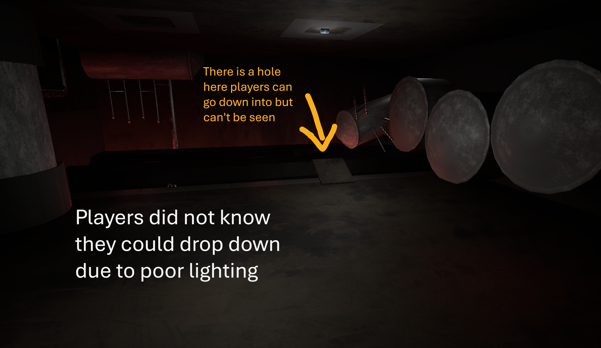
Blockout 1 — unlit drop-down hole, path forward invisible to players
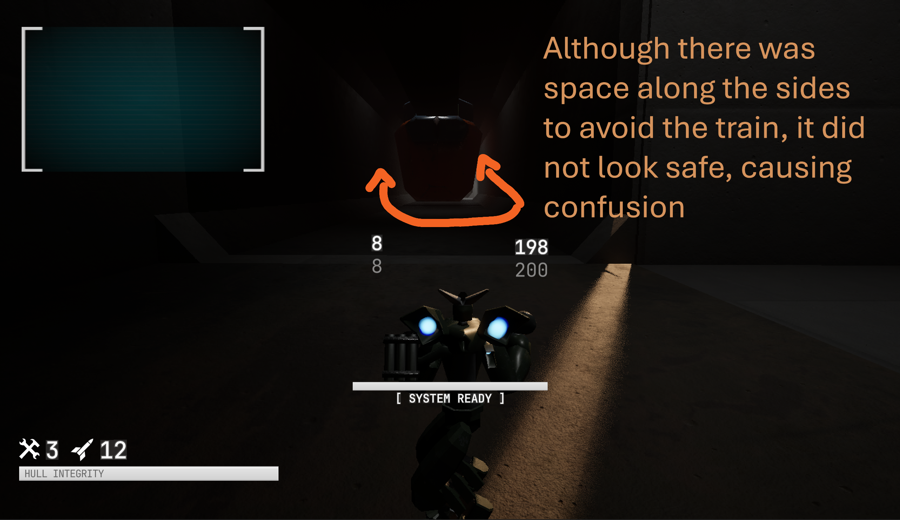
Blockout 2 — train avoidance space present but visually unreadable, causing confusion
- Solution 1: Made the drop-down path clearly visible post-turret using environmental framing — the player's eye is now naturally drawn to the exit without interrupting flow
- Solution 2: Added two visible safe havens on either side of the train tunnel — players can now confidently time their traversal with clearly readable spaces to retreat to
Both solutions addressed the same root problem — players couldn't read the space. Lighting made the path forward obvious and the safe havens gave players the confidence to progress through the train hazard without hesitation
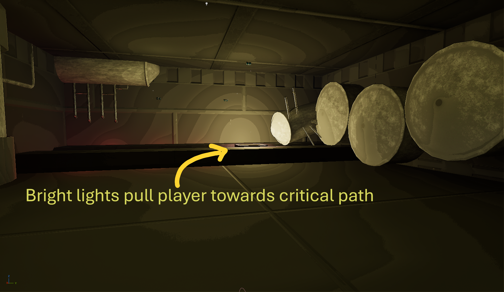
Targeted lighting guiding the player toward the drop-down critical path
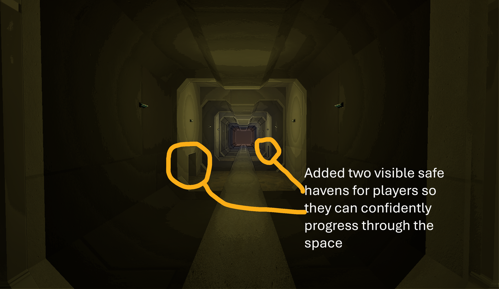
Visible safe havens on both sides enabling confident traversal through the train tunnel
Beat 05
The Final Boss Room
- Goal: Deliver a climactic boss encounter followed by an escape sequence that reinforces the spatial connectivity of The Wall — bringing the player back through spaces they recognize to exit through the door that was locked at the start
- Design Action 1: Designed the boss arena to give the player enough space to maneuver freely while keeping the encounter readable and the objective clear
- Design Action 2: Routed the escape through a chute back into Sector 1 and out the original locked front entrance — rewarding the player with spatial recognition and a sense of closure that ties the level together
Playthrough — Final Boss Room
- The Space: The control room at the heart of The Wall — where the facility's commander operates. The player must eliminate him here before escaping through a chute back through the facility and out the front entrance
- Flaw 1: The initial blockout was a plain square room with no spatial interest — it failed to communicate the importance of the space or feel like a climactic endpoint to the level
- Flaw 2: Server equipment placed in the center of the arena disrupted the boss encounter — both the player and the boss would collide with the geometry, breaking the flow of the fight
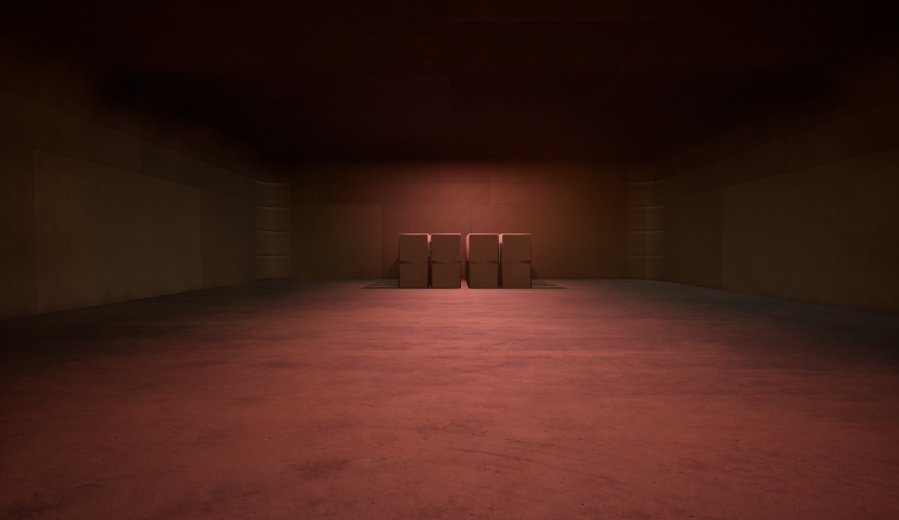
Blockout 1 — arena shape and initial phase zone planning
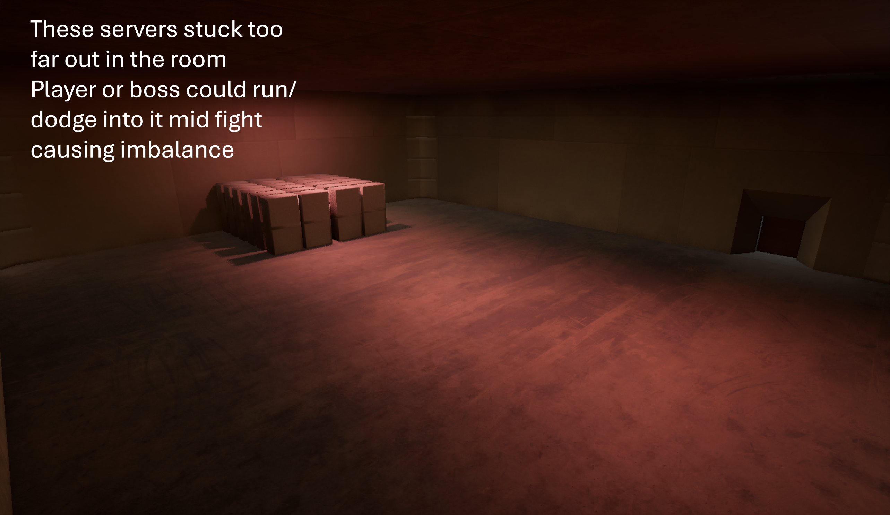
Blockout 2 — featureless square room with centrally placed cover risking accidental collision during the encounter
- Solution 1: [Placeholder — describe how you resolved the arena scale and player movement issue]
- Solution 2: [Placeholder — describe how you fixed cover distribution relative to boss attack patterns]
[Placeholder — 2-3 sentences on how these changes improved the boss encounter feel and player experience]
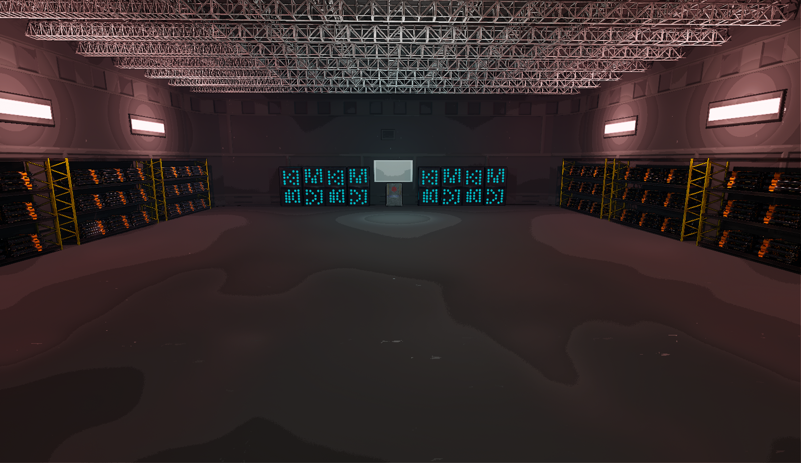
Control station and server racks establish the room as a command center — the space now reads as a climactic final encounter
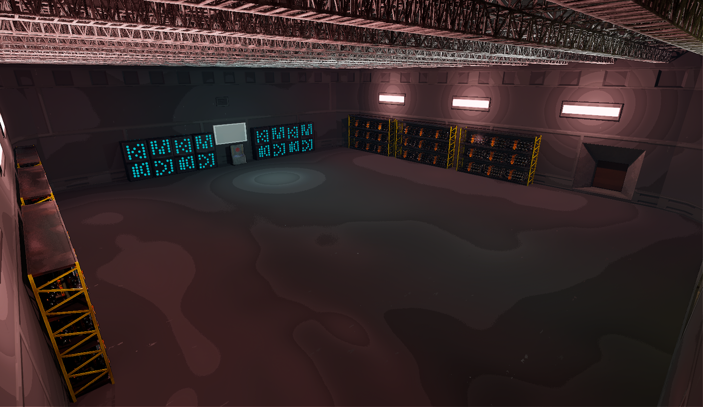
All equipment pushed to the perimeter — center of the arena kept clear for unobstructed combat
Process & Documentation
Before touching the engine, every design decision was documented in a Level Design Document — outlining encounter goals, spatial intent, enemy placement logic, and pacing targets for each section of the level. This served as a living reference throughout the development cycle.
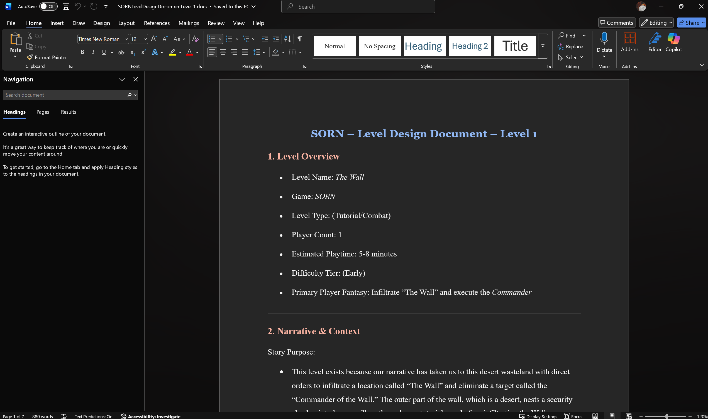
Mission 1 Level Design Document — click to open PDF
The level went through multiple map iterations as design goals evolved. These top-down maps show how the layout thinking changed from first draft to finalized build.
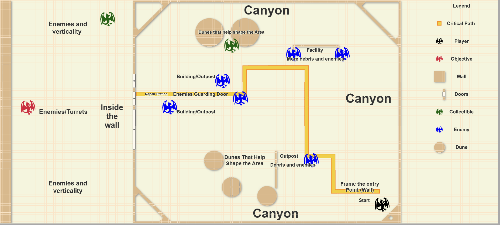
V1 — First map of the Desert environment
Final — Finalized Desert map after iteration
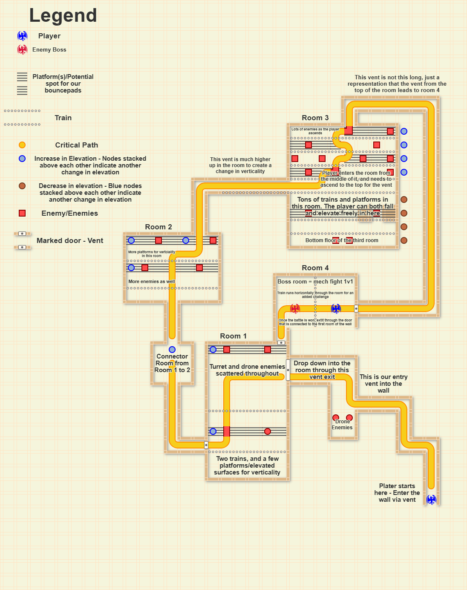
V1 — First map of The Wall facility
Final — Finalized Wall map after iteration
The process began with research and reference gathering to define the visual and gameplay language of the level before any blockout work started.
- Studied mech-focused games like Armored Core VI to analyze combat pacing, encounter design, and level flow
- Collected visual references — concept art, gameplay screenshots, and real-world military/industrial imagery
- Organized everything on a Miro board to map out layouts, level goals, and design solutions visually before touching the engine
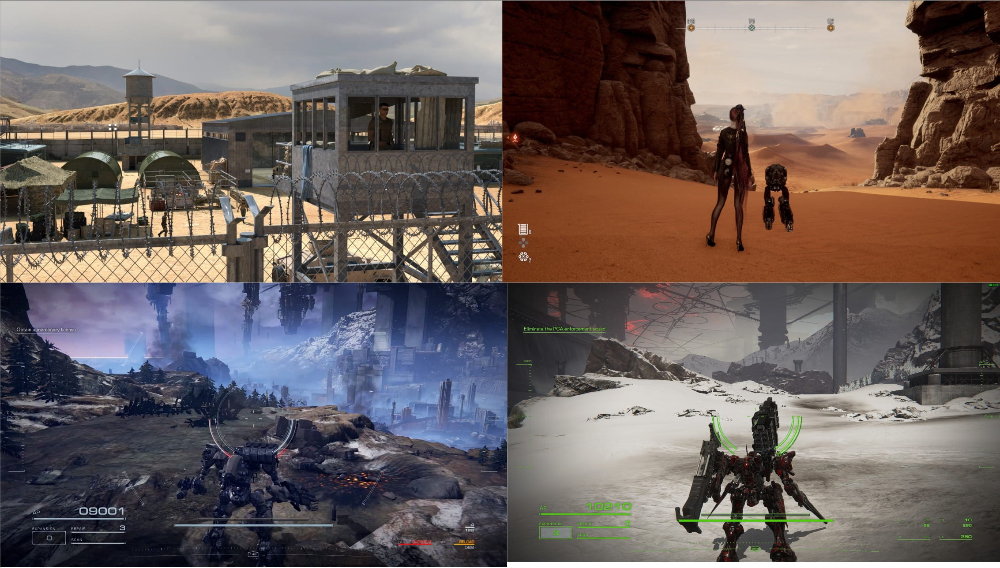
Miro board — references, layout sketches, and design goals organized before blockout
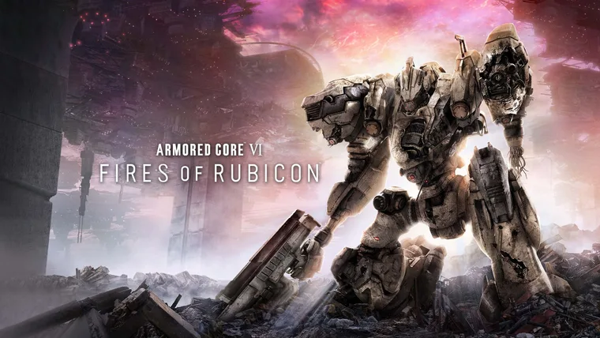
Armored Core VI — primary gameplay reference for combat pacing and mech traversal
Conclusion & Learnings
Developing S.O.R.N's first level provided a hands-on opportunity to create large-scale 3D environments that balance exploration, combat, and player guidance. Iteration and refinement were key to ensuring pacing, flow, and engagement remained compelling throughout each encounter.
Knowledge Gained
- Gained experience blocking out levels and using Unreal Engine tools like CubeGrid, landscaping, and foliage
- Designing with purpose — every prop, encounter, and space reinforces gameplay or narrative
- Communicating level design concepts clearly through maps, diagrams, and reference visuals
Areas for Growth
- Exploring more creative layouts and prop placement to enhance player experience
- Applying feedback effectively while maintaining a cohesive level design
- Balancing challenge and guidance to better teach player systems through level design